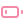

Home lab administration with

included
Zentrox is an easy homelab administration tool to remote control
computers.
Written in 🦀 Rust
Package Manager
You can easily install and remove packages on your devices.
The package manager can also clean up unneeded packages. Screenshot
Powered by apt, dnf and pacman
File Manager
Zentrox includes a simple package manager.
It also supports downloading files from your systems.
Screenshot
Easy
Zentrox is easy to install and use.* The set up is only takes a
few minutes to run. It only supports Linux 🐧 tho.Let's go
Secure
Zentrox values security (and privacy) a lot.
It uses TLS, secure key derivation, 2FA and strong encryption. Screenshot
argon2, pbkdf2, aes 256 gcm, one time pad
Open Source
The project is fully open source. It is licensed under Apache 2.0
You can find it:
here.
It is maintained and developed by 𝕏
me. PRs and feedback are
welcome.
News
To get up-to-date news about Zentrox, you can follow me here: GitHub - Fosstodon - X - Dev.to